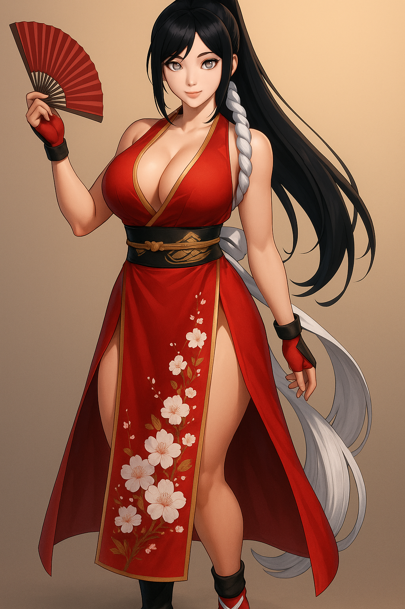
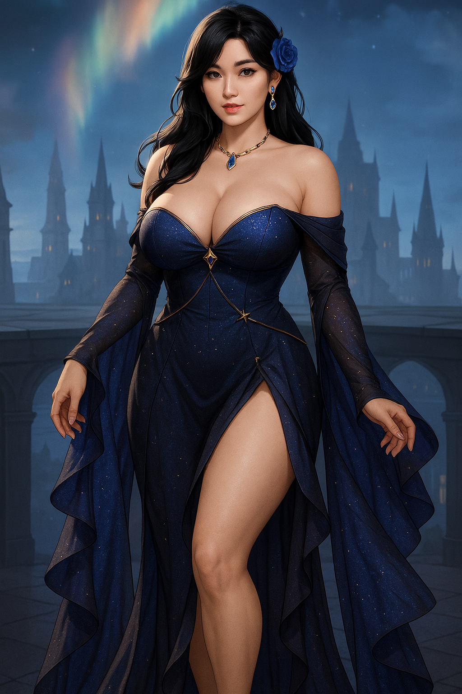
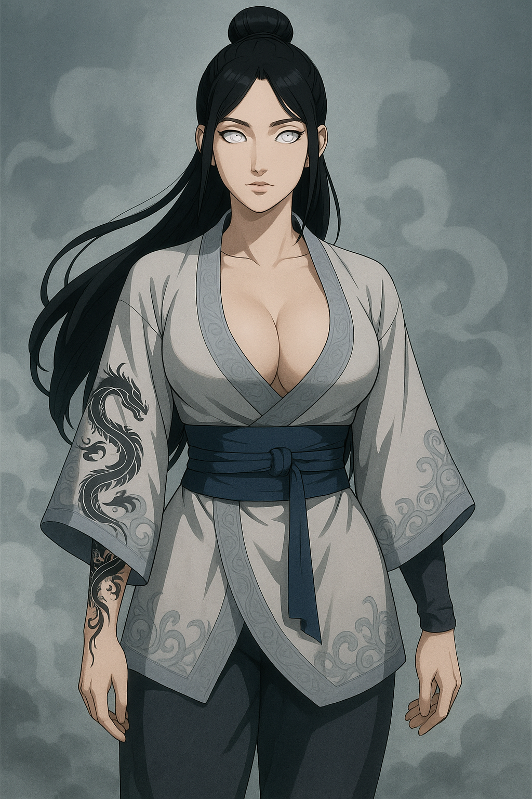

🧘 Cerimônia de Paz após a Quarta Grande Guerra
Hinara vestia o kimono floral da liderança médica, criado com tecidos de Taki e selado com chakra de cura ancestral. Durante a cerimônia, ela foi escolhida como conselheira do hospital central de Konoha.
👘 Traje: Kimono floral da paz · selo nebuloso na manga

🌫️ Missão de resgate no País da Névoa
Usando sua armadura de canalização de umidade, Hinara realizou 17 resgates em cavernas marítimas durante uma batalha entre clãs. O traje amplificava seu Jutsu de Cura Nebulosa.
🩺 Traje: Armadura médica de condutividade · selo de umidade nos ombros

🌙 Festival da Lua em Konoha
Durante o festival que une os cinco clãs da Luz, Hinara usou um traje cerimonial com pétalas bordadas e chakra canalizado para danças curativas. Foi sua primeira aparição pública após a missão em Suna.
👘 Traje: Vestido cerimonial com emblema do clã Hyuuga nas costas · pulseiras de estabilização de chakra

💮 Momento de descanso no Jardim Secreto
Em tarde de verão entre missões, Hinara usava um traje leve canalizado com chakra calmante. A renda branca possuía marcações sensoriais que reagiam ao fluxo de energia dos arredores.
👘 Traje: Vestido de linho com sensores florais · sandálias seladas